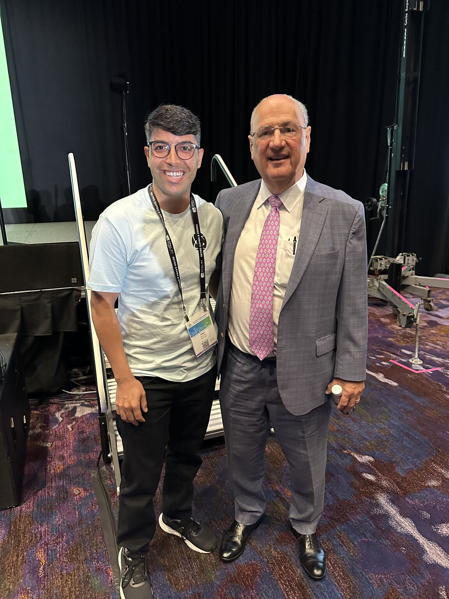

I am a Ph.D. researcher in Electrical Engineering at Texas A&M University, working in power and energy systems. I received my B.Sc. in Electronics Engineering and M.Sc. in Electrical Engineering, and my current Ph.D. research focuses on resilient operation of electric power distribution systems, with emphasis on black-start restoration, maximal load delivery, microgrid coordination, distributed energy resources, and uncertainty-aware optimization.
My work integrates mathematical optimization, physics-based distribution-system modeling, and large-scale simulation. I develop computational workflows using OpenDSS, Julia/JuMP, PowerModelsDistribution.jl, PowerModelsONM.jl, Python, and mixed-integer optimization solvers to support restoration decision-making under extreme events, uncertain load behavior, renewable variability, and DER availability constraints.
My broader technical background includes power electronics and converter-based systems, including multi-port solid-state transformer architectures, grid-forming and grid-following converter concepts, UPQC-based power-quality support, DC-link behavior, renewable integration, and battery energy storage interfaces. I am extending these restoration, optimization, and converter-based power-system methods toward data-center power infrastructure, with focus on reliable operation of high-density electric loads under contingency, DER uncertainty, backup generation constraints, and resilience requirements.
Power-System Analysis and BSR Desktop Application
Developed a Python-based desktop application for power-system analysis and black-start restoration studies. The platform supports power flow, optimal power flow, maximal load delivery, black-start restoration, uncertainty studies using smart-meter data, and experimental AI-based restoration methods. It integrates Julia/JuMP optimization models, PowerModelsONM.jl and PowerModelsDistribution.jl workflows, OpenDSS validation, Excel-based data handling, operating-day selection, contingency-scenario configuration, and automated visualization. The application also includes a visual system builder, automated validation and reporting, and GridMate, an assistant for diagnosing model and solver issues and interpreting restoration results.
Research and Professional Highlights
Selected moments from IEEE PES events, power systems research, laboratory teaching, technical mentoring, and collaboration with researchers in grid resilience and optimization.

Power Electronics and Converter-Based Systems
My broader electrical-engineering work also includes solid-state transformer (SST) architectures, grid-forming and grid-following converter concepts, converter-dominated electric systems, UPQC-based power-quality support, DC-link dynamics, renewable and battery integration, voltage sag/swell mitigation, harmonic reduction, and resilient energy routing for critical power infrastructure.
Latest News
- Jul. 2026
IEEE PESGM paper accepted: two-stage robust maximal load delivery on a large-scale distribution system.
- May 2026
IEEE PES T&D poster presentation on robust black-start restoration under demand uncertainty.
- 2026
Working on a data-center power infrastructure project involving SST-based architecture and machine-learning-based battery health monitoring.
- Feb. 2026
IEEE TPEC paper on sequential black-start restoration using PowerModelsDistribution and PowerModelsONM.
- 2025
NAPS paper on sequential black-start restoration using PowerModelsONM.jl.
- Jul. 2025
IEEE PESGM poster on PowerModelsONM-based maximal load delivery under load and PV variability.
- Summer 2025
Continued power systems research internship at Los Alamos National Laboratory.
- Jan. 2025
Presented black-start restoration work at Grid Science Winter School and Conference.
- 2025
IEEE TPEC paper on power-loss minimization in active distribution systems using PowerModelsDistribution.
- 2024
NAPS paper on sequential black-start restoration in active distribution networks and microgrids.
- Jul. 2024
IEEE PESGM poster on black-start restoration for power distribution systems.
- Mar. 2024
TAMU/LANL poster presentation on distribution-system resilience under extreme weather events.
Experience
Ph.D. Researcher, Graduate Research Assistant, Power and Energy Systems
College Station, TX
Summer Research Intern, Power Systems
Los Alamos, NM
Teaching Assistant, ECEN 325 Electronics
Research Areas
- Black-start restoration of active distribution systems with DERs and grid-forming resources.
- Two-stage robust optimization for maximal load delivery under uncertain real and reactive loads.
- Microgrid networking, PV/BESS/diesel coordination, and storage state-of-charge constrained restoration.
- Scenario-based resilience analysis with PV reduction, DER unavailability, permanent faults, and combined contingencies.
- Robust operation and restoration of critical electric infrastructure, including future data-center power systems.
- Converter-based power electronics, including SST architectures, grid-forming and grid-following converters, UPQC, DC-link behavior, and power-quality support.